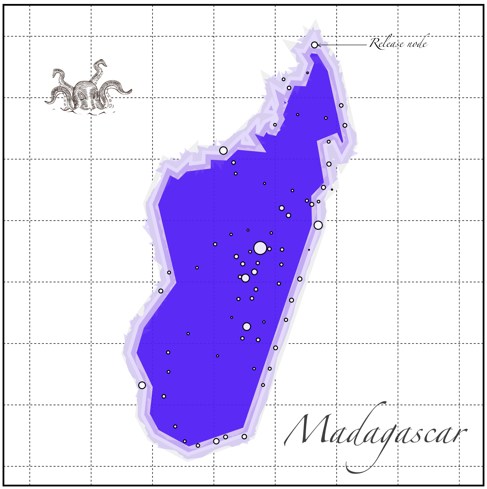
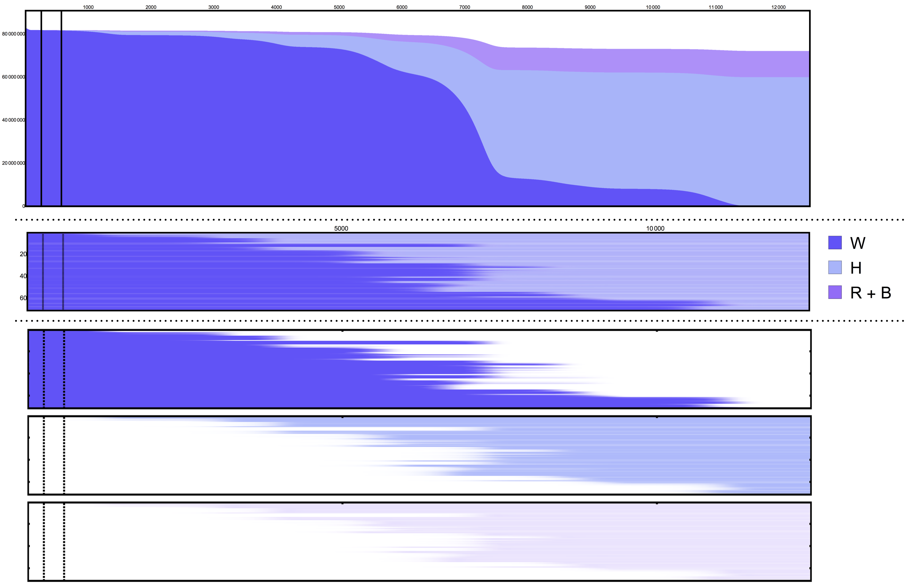

This is the first test in which we have used different population sizes on the nodes of our network.
Each node represents a city (as parsed from Wolfram Knowledge Database),
and the mosquito population each location is scaled proportionally to the amount of humans present at each location.

Results and Analysis
We present the results of running the simulation in our "flowchart" and "bleed-plots". In the "flowcharts" it is
apparent that there is a slow spread of the gene-drive in the initial days of the simulation. After fixation in the largest
population is achieved, however, the gene-drive takes over quickly over the remaining bits of the landscape.
In the "bleed-plots" the change in composition accross the landscape can be seen in a static image (x-axis being time, and y-axis being the node id),
in which we can confirm that the gene-drive is spreading according to the distances between cities.

Video
As this was an exploratory analysis to test the dynamics of gene-drives accross the landscapes with heterogoeneous mosquito population sizes, we exported a
video of the process (please note that it might take
time to load, depending on the internet connection).
Take-Aways and Other Ideas
The analysis of the heterogeneity in population sizes could be interesting because, from this limited test, it seems to change the dynamics of the gene-flows (comparing it to our previous experiments in which all the population sizes were homogeneous).
We need to come up with experiments and tools to analyze these phenomena.
How do heterogeneous population sizes affect the dynamics of the gene-drive spread?
Is it semi-analogous to other processes such as: water/heat sinks?
What kind of analytical tools do we need to perform that spatio-temporal analysis?
Authors
Héctor M. Sánchez C., Jared Bennett, Sean L. Wu, John M. Marshall